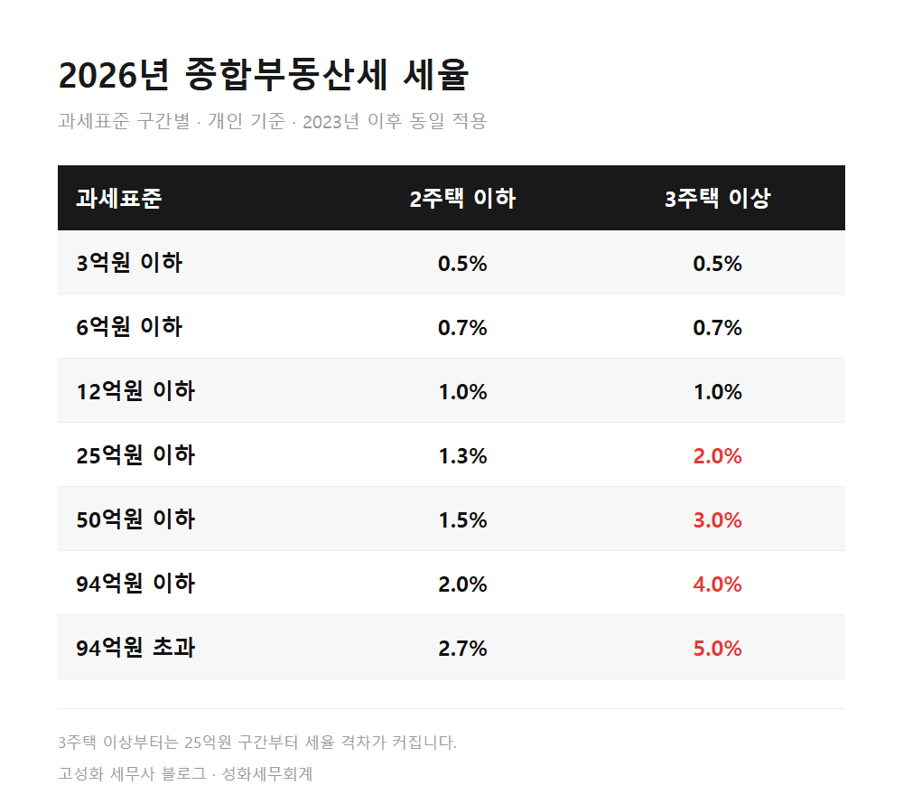
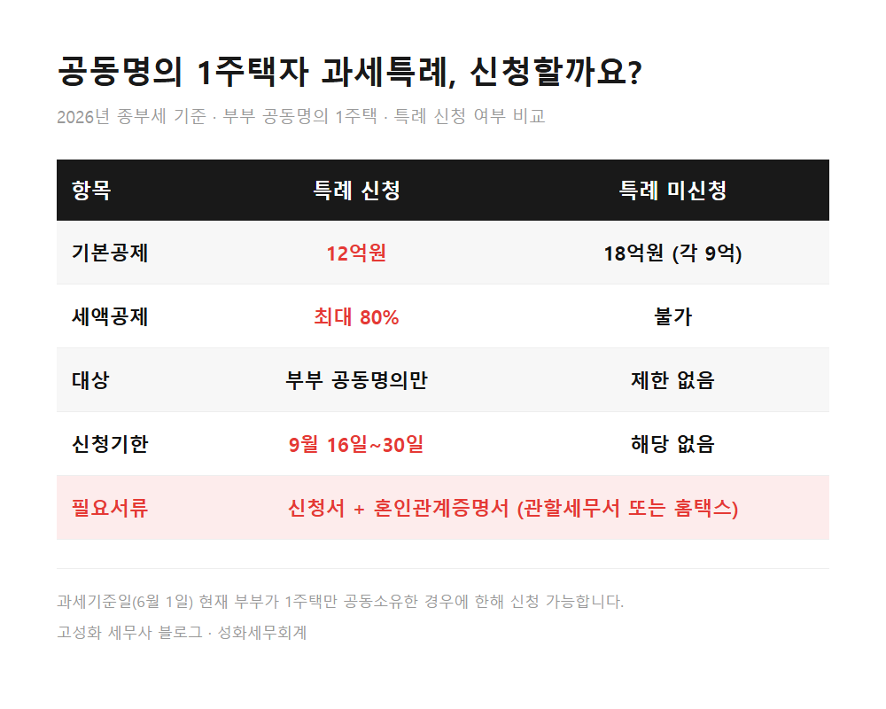
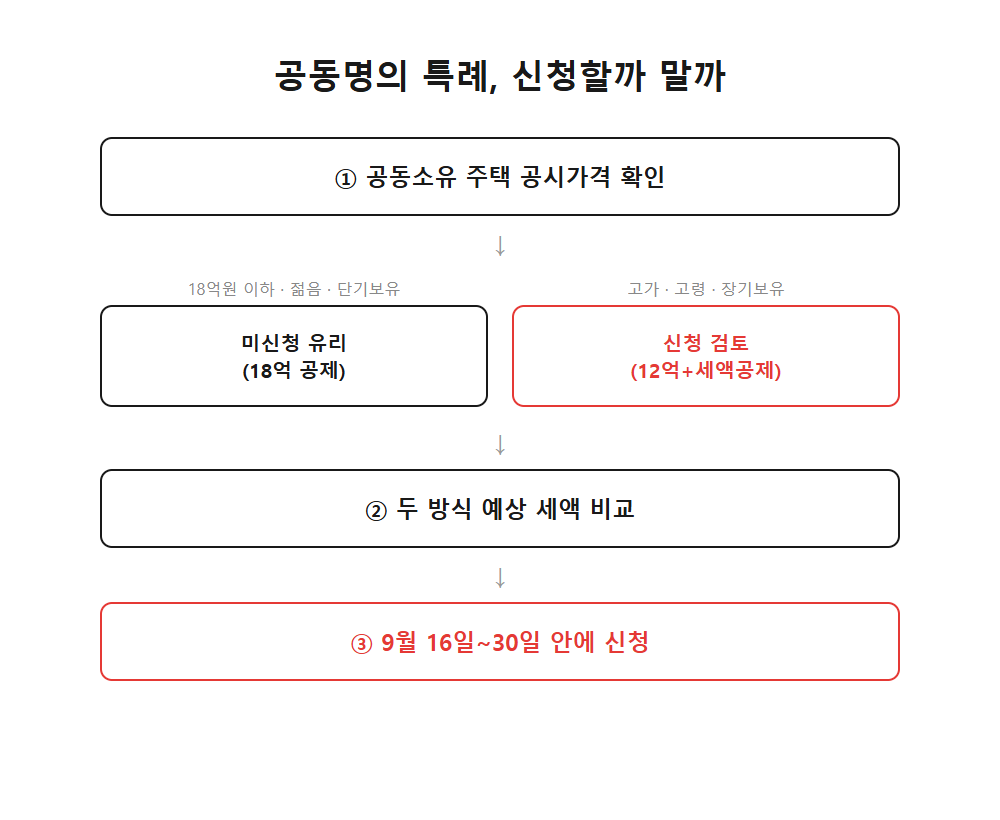
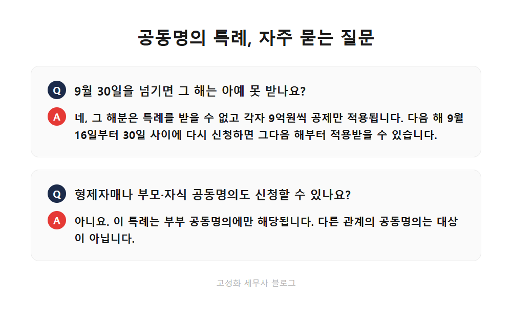

← 세무칼럼 목록
부동산·상속·증여

부부 공동명의 종부세, 9월 30일 넘기면 세액공제 못 받습니다
부부가 함께 명의로 아파트를 산 지 벌써 여러 해 됐습니다. 매년 11월이면 종합부동산세 고지서가 두 장 날아오고, "이번엔 얼마나 나올까" 하고 열어보는 게 익숙해졌을 텐데요. 그런데 이 고지서 금액, 사실은 매년 한 번 정해지는 선택에 따라 꽤 달라질 수 있다는 걸 아는 분은 많지 않습니다. 바로 '공동명의 1주택자 과세특례' 신청 여부입니다.
이 글에서 다루는 내용
- 부부 공동명의 1주택, 원래는 어떻게 과세되나요
- 특례를 신청하면 뭐가 달라지나요
- 아무 공동명의나 해당되는 건 아닙니다
- "18억 공제가 12억보다 큰데, 신청 안 하는 게 유리한 거 아닌가요?"
한눈에 보기




자주 묻는 질문
특례는 매년 다시 신청해야 하나요?
9월 30일을 넘기면 그 해는 아예 못 받나요?
형제자매나 부모·자식 공동명의도 신청할 수 있나요?
정리하면
부부 공동명의 1주택자는 매년 9월 16일부터 30일 사이에 공동명의 1주택자 과세특례를 신청할지 선택할 수 있습니다. 신청하면 12억원 공제와 최대 80% 세액공제를, 신청하지 않으면 18억원 공제만 적용됩니다. 어느 쪽이 유리한지는 공시가격과 나이, 보유기간에 따라 달라지므로, 올해 고지서를 받기 전에 미리 계산해보고 신청 여부를 결정하시는 걸 권해드립니다. 저희 사무실에서는 보유하신 주택의 공시가격과 지분 구조를 바탕으로 두 가지 방식의 예상 세액을 비교해드리고 있으니, 신청 마감 전에 편하게 문의 주세요.
본문 전체와 근거 조문은 블로그에서 확인하실 수 있습니다.